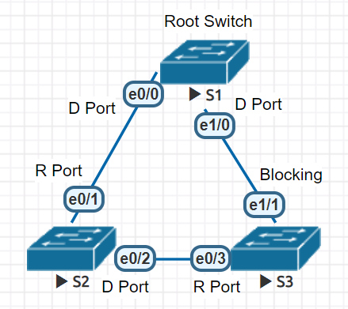

Spanning Tree
Port State
傳統 STP 的 port 由 down 到 up 需要經歷 5 個狀態：
| 狀態 | Disabled | Blocking | Listening | Learning | Forwarding |
| 接收 BPDU | X | O | O | O | O |
| 發送 BPDU | X | X | O | O | O |
| Learn Mac Address | X | X | X | O | O |
| Forward Data Frame | X | X | X | X | O |
| 維持時間 | 直到 no shut |
直到 topology 有變 | Forward Delay (15s) | Forward Delay (15s) | 直到 shutdown 或成為 Alternate port |
Protocols
| Protocol | Standard | Resources needed | Convergence | Number of Trees |
| STP | 802.1d | Low | Slow | One |
| RSTP | 802.1w | Medium | Fast | One |
| PVST+ | Cisco | High | Slow | One per VLAN |
| Rapid PVST+ | Cisco | Very High | Fast | One per VLAN |
● "RSTP" 是 STP 的 Rapid 版。Rapid 的原理大概是加入了 Synchronization process，和改變了 BPDU 的一些規則，令到當 topology 有變時 convergence 時間減少。
● "PVST+" 是 RSTP 的多 VLAN 版。
● "RPVST+" 是 PVST+ 的 Rapid 版。
Roles
無論用仼何 protocol，port roles 都大同小異。

Root Port → Designated Port → Root Bridge
spanning-tree mode rapid-pvst
spanning-tree vlan 10 priority 64
● "mode" default 是 STP (ieee-802.1d).
● "pvst" 是 cisco 專利，per VLAN stp.
● 遇到另一端 switch 不支援 RSTP 的話，會自動降為 STP 運作。
● "priority" 最小的成為 root bridge，相同就楝 Mac 最小的。
spanning-tree vlan 10 root primary
spanning-tree vlan 10 root secondary
● 或者直接指定為 root bridge.
Verify
show spanning-tree
show spanning-tree vlan 10
Optimizing
PortFast
有些 port 是用來插電腦的，肯定不會改變 STP topology，如果還要等 30 秒才能上線實在是太無謂，這時可以用 PortFast，可以跳過所有 state 直接到 Forwarding.
int f0/10
spanning-tree portfast
● 設定成 PortFast 的 port 如果收到 BPDU，還是會依正常情序進入 Listening & Learning.
spanning-tree portfast default
● 或者在 global mode 一次過把所有 port 設成 portfast.
Uplinkfast
當 e0/0 突然死掉時，e0/2 需要等待 30 秒才能進入狀態。為了解決這個 Directly Fail 問題 Cisco 用了 Uplinkfast.
spanning-tree uplinkfast
● 啟動了 Uplinkfast 的 switch 會自動選一個 blocking port 變成 standby 狀態，當 root port 死掉時即時頂上。因此，uplinkfast 不應在 root switch 上執行。
Backbonefast
解決了上面的 Directly Fail 問題，還有 Indirectly Fail 問題。當 e0/1 或 e0/0 出現問題，S3 是懵然不知，等到 S1 與 S3 重新連上需要 50 秒，Cisco 為了解決此問題用了 Backbonefast.
spanning-tree backbonefast
● 必需在所有 switch 都使用。有 Backbonefast 加上 Uplinkfast，可以在無間斷內跳轉 root port.
Topology protection
Root Guard
int f0/10
spanning-tree guard root
當有比 root switch 的 priority 更小的 switch 插入 f0/10 企圖奪位時，f0/10 會變成 "Root Inconsistent" 狀態，同 Blocking 一樣，不接收不發出 frame.
BPDU Guard
int f0/10
spanning-tree bpduguard enable
只要收到 BPDU 就將 f0/10 變成 Error Disable，不管你奪不奪位。
MSTP
(Multiple Spanning Tree Protocol)，其實去到 CCIE 先教，但係政府工有考，所以輕輕講一下。
MSTP 又叫 802.1s，繼承了 RSTP 的 Synchronization Process 來達成高速收斂，但比 RSTP 更不花硬件資源。RSTP 是 per-VLAN 的，即 100 個 VLAN 就有 100 個 spanning tree topology，因此 VLAN 越多，switch 的 CPU 和 RAM 就越大壓力。MSTP 引入 instance 概念，把多個 VLAN 分派到 instance 內，只生成一個 spanning tree topology，例如前 50 個 VLAN 分派到 instance 1，後 50 個 VLAN 分派到 instance 2，總的 spanning tree topology 就只有 2 個。